Peaky Blinders is a British period crime drama television series created by Steven Knight.
Set in Birmingham, England, the series follows the exploits of the Shelby crime family in the direct aftermath of the First World War.
The fictional family is loosely based on a real 19th-century urban youth gang of the same name, who were active in the city from the 1890s
to the early twentieth century.
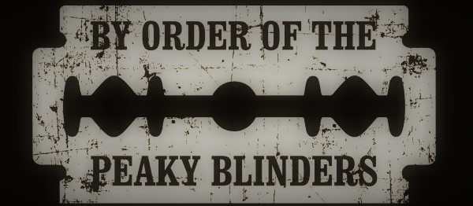
In 2018,after the show's Drama Series win at the BAFTA TV Awards, Knight confirmed his "ambition of making it a story of a family between two wars, and by ending it with the first air raid siren in Birmingham" ,
which was 25 June 1940. After the conclusion of the fourth series, he confirmed that it would take another three series (seven in total)
to complete the story up to that point.The fifth series premiered on BBC One on 25 August 2019 and finished on 22 September 2019. Netflix, under the deal with Weinstein Company and Endemol, had acquired the rights to air Peaky Blinders in America & around the world.
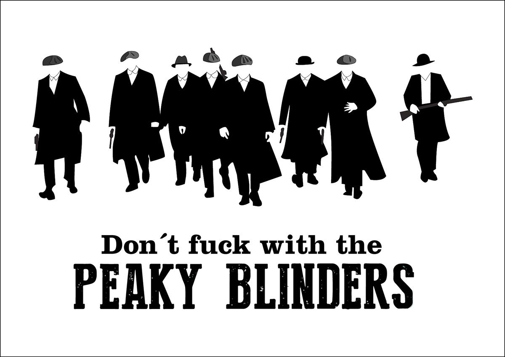
Season 1 - Trailor
Episode 1
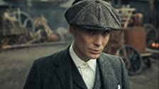 8.2
Thomas Shelby plans to fix a horse race; some guns turn up stolen.
Episode 2
8.4
Thomas Shelby starts a feud with a gypsy family and finally meets with Inspector Campbell to talk about the stolen guns.
Episode 3
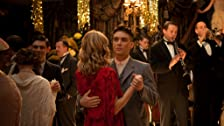 8.4
Thomas is livid to find out that Ada and Freddie are married; IRA sympathizers tries to get information from Thomas about the stolen guns.
Episode 4
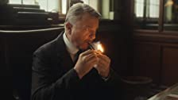 8.7
Thomas attempts to make a deal with Campbell; The Peaky's war with the Lees intensifies.
Episode 5
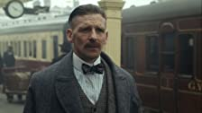 9.0
The Shelbys get a surprise visit by an almost forgotten relative. Thomas has one more dangerous plan with the cops.
Episode 6
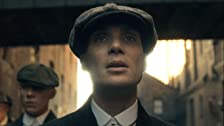 9.2
Tommy and the Peaky Blinders prepare for a big operation, that quickly becomes way trickier than they thought.
Season 2 - Trailor
Episode 1
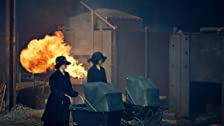 8.6
When Birmingham crime boss Tommy Shelby's beloved Garrison pub is bombed, he finds himself blackmailed into murdering an Irish dissident.
Episode 2
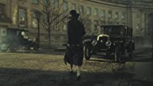 8.5
After murdering an Irish dissident, Tommy has no choice but to be a pawn in Inspector Campbell's treacherous political game.
Episode 3
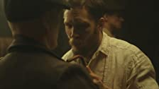 8.6
After joining London crime boss Alfie Solomons in a business venture, Tommy worries that Alfie's newly revealed volatility could pose a problem.
Episode 4
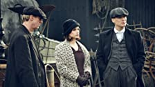 8.7
The Peaky Blinders take over London's Eden Club; Sabini convinces his old adversary Alfie Solomons to join forces and eradicate the gan
Episode 5
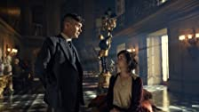 8.9
The Peaky Blinders are under attack. Tommy's power base in London is obliterated, and both Arthur and Michael are arrested and imprisoned.
Episode 6
9.2
Tommy plans to execute the mission given to him by Campbell: the assassination of a high-ranking member of the military establishment.
Peaky Blinders was created by Steven Knight, directed by Otto Bathurst, and produced by Katie Swinden. The writers are listed as Steven Knight,
Stephen Russell and Toby Finlay.Screen Yorkshire provided funding for the production through the Yorkshire Content Fund,
ensuring that the majority of the show was filmed in Yorkshire as part of the deal.The series was filmed in Birmingham,
Bradford, Dudley, Leeds, Liverpool, and Port Sunlight. Railway sequences were filmed between Keighley and Damems,
using carriages from the Ingrow Museum of Rail Travel (owned by Vintage Carriages Trust),
and carriages owned by the Lancashire and Yorkshire Railway Trust. Many of the scenes for the show were shot at the Black Country Living Museum.
Ulster-born, New Zealand-raised Sam Neill enlisted the help of Northern Irish actors James Nesbitt and Liam Neeson to help him recover his lost
Northern Irish accent for the role of C.I. Campbell. In the end, he had to tone down the accent since the series is being marketed in the United States.
Controversially, the production did not hire linguists to assist in the show, leading to the Gypsies' frequently speaking broken Romanian (as opposed to Romani)
Series 2
A second series was commissioned shortly after the broadcast of the first and aired in October and November 2014. On 11 January 2014,
auditions were held in Digbeth area of Birmingham (near where parts of the series are set) for white and mixed race teenage male extras,
resulting in lengthy queues.
Series 3
Shortly after the final episode of the second series, the show announced via its Twitter account that it had been renewed for a third series.
On 5 October 2015, the official Peaky Blinders Twitter account announced that filming had begun for series 3.
Filming wrapped on 22 January 2016, after 78 days of shooting.
Series 4 & 5
During the initial broadcast of series 3, the BBC renewed Peaky Blinders for series 4 and 5, each of which comprises six episodes.
Filming for series 4 started in March 2017 and premiered on 15 November 2017 on BBC Two. The fourth series did not include The Weinstein Company or its logo in its credits and will continue to no longer be included,
even though the company was formerly involved in the US distribution of the series.
On 22 August 2018, the BBC confirmed that series 5 would be broadcast on BBC One.
Having already premiered to a select audience at Birmingham Town Hall on 18 July 2019, the series began airing on BBC One on 25 August 2019.
Directions
Series 1
Otto Bathurst &
Tom Harper
Series 2
Colm McCarthy
Series 3
Tim Mielants
Series 4
David Caffrey
Series 5
Anthony Byrne
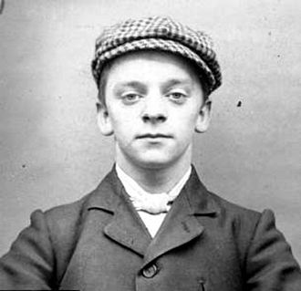
Harry Fowles, a member of the gang sporting the signature overcoat and peaked flat cap.
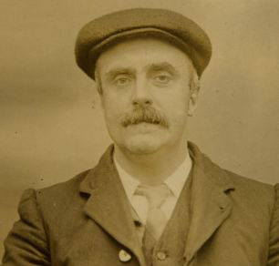
Thomas Gilbert, a powerful member of the gang.
The Peaky Blinders were an urban street gang based in Birmingham, England, that operated from the end of the 19th century
to after the First World War. The group, which grew out of the harsh economic deprivations of working class Britain,
was composed largely of young men of lower to middle-classes. They derived social power from robbery, violence, racketeering,
illegal bookmaking and the control of gambling. Members of this gang wore a signature outfit that included tailored jackets,
lapel overcoats, button waistcoats, silk scarves, bell-bottom trousers, leather boots, and peaked flat caps.
The gang was highly organized with its own systems of hierarchy.
The Blinders’ dominance came about from beating rivals, such as the "Sloggers", whom they fought for territory in
Birmingham and its surrounding districts. They held control for nearly 20 years until 1910, when a larger gang,
the Birmingham Boys led by Billy Kimber, overtook them. However, even though they had disappeared by the 1920s,
the name of the "Peaky Blinders" became synonymous slang for any street gang in Birmingham.
Notorious Members
Contrary to popular belief, most Peaky Blinders were from the middle class and had jobs. The most powerful member of the Peaky Blinders
was a man known as Kevin Mooney. His real name was Thomas Gilbert, but he routinely changed his last name.
He initiated many of the land grabs undertaken by the gang.
Other prominent members of the gang were David Taylor, Earnest Haynes, Harry Fowles, and Stephen McNickle .
Harry Fowles, known as "Baby-faced Harry", was arrested at age 19 for stealing a bike in October 1904.
McNickle and Haynes were also arrested at the same time, for stealing a bicycle and home invasion, respectively.
Each was held for one month for their crimes. West Midlands police records described the three arrested
as "foul mouthed young men who stalk the streets in drunken groups, insulting and mugging passers-by.
Taylor was arrested at age 13 for carrying a loaded firearm.[13]
Many gang members were veterans of the First World War . Henry Lightfoot, the first person to be named as a Peaky Blinder,
had joined the British Army three times in his life and participated in the Battle of the Somme in 1916.
One of the youngest members, Henry Fowler, was buried alive in the trenches and could not speak or see for some time following the war.
The notorious gangster Billy Kimber was also a former Peaky Blinder.